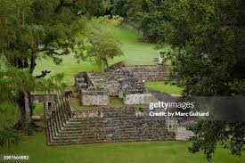

La ciudad perdida de los mayas

Las Ruinas de Copán son un lugar histórico, colorido y muy llamativo para el ojo humano. Es un sitio lleno de cultura e historia maya, donde las personas pueden aprender, recorrer sus espacios arqueológicos y disfrutar de comidas típicas y panes artesanales.
Copán Ruinas, Honduras